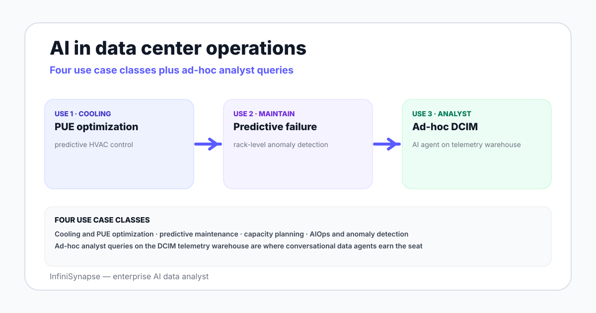

Three forces pushed AI from operations pilots into actual production rotations between 2018 and 2026. First, hyperscale growth — the AI training boom — made every percent of PUE worth millions of dollars in annual energy spend, which justified the data engineering effort needed to feed models. Second, sensor density rose sharply: a modern rack publishes hundreds of telemetry channels at second-level granularity, and time-series stores became cheap enough to hold years of history online. Third, the operator community settled on a review pattern — human-in-the-loop recommendations rather than autonomous control — that made AI deployments approvable by facilities engineers and SRE teams.
The Uptime Institute Global Data Center Survey, the longest-running operator benchmark in the field, tracks this shift annually. Its 2024 and 2025 editions report that cooling optimization and anomaly detection lead the adoption curve, while autonomous control remains rare and is concentrated in a few hyperscale operators who design custom guardrails.

Cooling is the largest non-IT energy line in a data center and the easiest target for AI. The reference case is Google DeepMind, which trained neural networks on five years of operational sensor data from one Google data center — temperatures, power draws, pump speeds, setpoints — and used the model to recommend setpoint changes for operators to review and apply. DeepMind reported a 40 percent reduction in energy used for cooling and a 15 percent reduction in overall PUE overhead. The approach has since been generalized into the wider Google fleet.
What carries across to your facility: AI cooling models need clean telemetry, a defined safe operating envelope, and an operator review step. Models that propose setpoints inside the envelope and explain themselves are approvable; models that act autonomously usually are not.
Predictive maintenance applies models to vibration, temperature, current draw, and operating-hour data from chillers, UPS systems, generators, transformers, and computer room air handlers. The goal is to schedule maintenance before a part fails rather than after it triggers an unplanned outage. Vendors such as Schneider Electric have published predictive maintenance modules inside EcoStruxure for Data Centers that score asset condition continuously.
The honest payoff varies by equipment class. Battery UPS systems and chillers see the biggest gains because their failure modes are slow and visible in telemetry. Generators see less because their failures cluster around start events, which models can struggle to anticipate.
Capacity planning models read DCIM data on rack power draw, breaker headroom, cooling capacity by zone, and historical growth rates. They project when a room, a row, or a circuit will run out of headroom under different demand scenarios. For operators managing colocation suites or multi-tenant rooms, capacity forecasts feed contract negotiations and refresh cycles, not just operational planning.
Anomaly detection is the highest-volume AI workload in data center operations because it runs on every telemetry stream the operator captures. Models learn normal patterns for rack inlet temperature, PDU current draw, fan speed, leak detection, and IT-side metrics, then alert when a stream drifts outside its learned envelope. The win is reducing the alert tax — fewer threshold-based pages, more incidents caught before they become customer-visible.
AIOps reads DCIM, BMS, and IT monitoring data into one event stream and applies clustering and correlation models to group related signals into incidents. The classic case is a thermal incident in one row that triggers IT-side latency alerts on the workloads hosted there — without AIOps, the facilities team and the SRE team open separate tickets and discover the link hours later. Anthropic's research on building effective agents captures the same pattern: a system that directs its own retrieval and tool calls beats a fixed pipeline when signals span multiple sources.
| Tool category | What it does | Representative vendors | Data it owns | Where AI fits |
|---|---|---|---|---|
| DCIM platform | Asset inventory, power and space tracking, work orders | Sunbird, Nlyte, Schneider EcoStruxure, Vertiv | Rack, PDU, circuit, asset history | Capacity planning, predictive maintenance |
| BMS / EMS | Building and energy management for cooling and facilities | Honeywell, Siemens, Johnson Controls | HVAC, chillers, setpoints, energy | Cooling optimization, anomaly detection |
| Time-series database | High-frequency telemetry storage and query | InfluxDB, TimescaleDB, Prometheus, VictoriaMetrics | Sensor streams, IT metrics | Underlies every other AI use case |
| AIOps platform | Event correlation, alert reduction, root cause | BigPanda, Moogsoft, Dynatrace, Datadog AIOps | Logs, metrics, events | Cross-source incident clustering |
| AI data agent | Plain-English questions on the underlying stores | InfiniSynapse and the emerging data-agent category | Bound across DCIM, BMS, TSDB, CMDB | Ad hoc operations analytics |
Each row owns a different shape of data. The DCIM owns the asset graph; the BMS owns the cooling control loop; the TSDB owns the raw telemetry; the AIOps platform owns the event stream; the AI data agent reads from all four when an analyst asks a question that does not fit a dashboard. Stacking the categories is the norm — operators rarely consolidate to one tool, because each is the system of record for a different team.
Threshold-based monitoring is brittle: a rack inlet temperature of 24°C might be normal in winter and abnormal in summer, and a static threshold cannot tell the difference. AI for data center monitoring replaces the static threshold with a learned envelope per stream, per season, per workload mode. The model alerts when the actual reading drifts outside its learned envelope, which catches early signs of cooling drift, sensor failure, or workload anomaly without flooding the operator with seasonal noise.
The technique is well established outside data centers — manufacturing, aerospace, and power grids all run learned envelopes on critical signals. Data centers came to it later mostly because the sensor coverage caught up later. With a modern rack publishing inlet/outlet temperatures, fan tach, PDU draws per outlet, and rack-level humidity, the data is now dense enough to support per-stream learning.
The five use cases above target the control loop or the alert queue. AI operations analytics for data centers targets a different seat: the operations analyst who needs to answer a question that did not make it onto a dashboard. "Which racks ran above 27°C inlet for more than ten minutes last month?" "Which PDU circuits are above 80 percent breaker capacity at peak?" "How did chiller plant efficiency change after the firmware upgrade in March?" These are the questions a DCIM dashboard does not answer because nobody pre-modeled them.
This is where a conversational data agent fits. The agent connects to the same time-series stores and DCIM database the operations team writes into, accepts the question in plain English, retrieves business context (what the rack naming convention means, which PDUs serve which row), drafts a reviewable plan, runs SQL or a TSDB query, verifies the result, and delivers an answer with the queries and the source rows attached. A guide on explainable AI data analysis spells out what the evidence trail must include.
InfiniSynapse fits this seat. It is an enterprise AI data analyst, not a DCIM and not an AIOps tool — it reads from your existing telemetry stores (PostgreSQL, MySQL, Snowflake, Supabase, S3, CSV exports) and answers operations questions in the analyst's voice. The differentiator inside this category is what InfiniSynapse calls database and knowledge base binding: each connection is paired with a curated knowledge base of operational definitions — what the rack codes mean, which sensors are which, what counts as a thermal exceedance — that the agent retrieves as a tool call before running any query.
The deployment pattern operators converge on is human-in-the-loop: AI proposes, an operator reviews, the system applies. For cooling setpoints, this means the model returns a recommended setpoint and a safe envelope, and an operator (or a controller checking the envelope) decides whether to apply. For predictive maintenance, the model returns a condition score and a confidence, and a planner schedules the work. For anomaly detection, the model alerts and a human triages.
The NIST AI Risk Management Framework gives reviewers a shared structure to assess these deployments — map, measure, manage, govern. For data centers the highest-value mapping work is identifying which AI outputs touch the physical plant (setpoints, schedules, breaker decisions) versus which stay advisory (anomaly alerts, capacity projections, ad hoc analytics). The first group needs envelopes, sign-off, and rollback paths. The second group needs evidence trails and explainability.
For analytics use cases, the safe starting point is read-only access to telemetry and DCIM stores. An AI data agent that runs on a read-only role with scoped grants cannot rewrite control logic or touch the BMS. Promotion to write access — for closed-loop control — is a separate decision that belongs to facilities engineering and risk management, not to the analytics team.
No AI tool fixes a miscalibrated sensor. Clean the telemetry first, then point the model at it.
Connect a read-only telemetry store, register the rack and PDU dictionary, and run a real operations question — for example, which racks crossed their thermal envelope last month. Review the plan, the queries, the verification, and the evidence trail before deciding whether the analyst seat belongs in your stack.
Try InfiniSynapse onlineLast updated: 2026-06-28 · Next scheduled review: 2026-09-28
Use cases on this page are grounded in vendor documentation (Schneider EcoStruxure, Sunbird, Nlyte, Vertiv, Honeywell, Siemens), Google DeepMind's published cooling research, the Uptime Institute Global Data Center Survey, NIST AI Risk Management Framework, and InfiniSynapse product documentation. The tool categories are working distinctions; several vendors straddle two categories, and the lines are still moving as AIOps and DCIM converge.
Conflict of interest: InfiniSynapse publishes this guide and sells in the AI data agent row of the tool table. To reduce bias, the page covers all five use cases, names competing vendors where they lead, and links to external sources for every numeric claim. We do not benchmark our product against named competitors here.
Update cadence: Reviewed every 90 days for terminology, vendor naming, benchmark figures, and schema consistency.